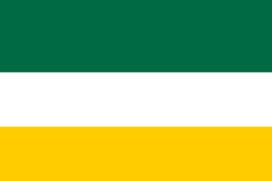

Preámbulo
Nosotros, el pueblo hernaviano, declaramos nuestra unión en una sola comunidad, guiados por los principios de respeto, justicia, innovación, progreso y fraternidad.
Artículo 1 – Liderazgo
El Arconte, cargo ejercido inicialmente por el fundador, será la máxima autoridad de Hernavia. Tendrá poder total para tomar decisiones administrativas, políticas y sociales mientras Hernavia consolida sus instituciones. El Arconte estará sujeto a esta Carta y deberá velar por la unión y el bienestar del pueblo hernaviano.
Artículo 2 – Principios Fundamentales
- Respeto y dignidad hacia los demás ciudadanos.
- Respeto y cuidado de la naturaleza y los recursos comunes.
- Participación activa en votaciones, asambleas o eventos convocados por Hernavia.
- Solidaridad con los demás hernavianos en momentos de necesidad.
- Búsqueda constante del conocimiento, la innovación y el progreso comunitario.
- Fraternidad con otras naciones y culturas, manteniendo la identidad hernaviana.
Artículo 3 – Obligaciones de los Ciudadanos
- Aportar a la comunidad mediante trabajo, servicio, recursos o conocimiento útil.
- Cumplir y respetar las decisiones del Arconte, como máxima autoridad provisional.
- Defender la paz y rechazar la violencia injustificada.
- Contribuir al desarrollo económico y social de Hernavia mediante la productividad y el esfuerzo propio.
- Respetar los símbolos de Hernavia como expresión de identidad común.
- Proteger y apoyar a su comunidad en situaciones de crisis o emergencia.
Artículo 4 – Identidad y Objetivos Iniciales
La bandera y demás símbolos serán definidos por el Arconte y reconocidos provisionalmente como representación de la identidad hernaviana, con su lema “Paz, naturaleza, innovación” y la frase “Nacidos de un sueño, luchando por cumplirlo”.
Los objetivos iniciales de Hernavia serán:
- Fortalecer la unión y crecimiento de la comunidad hernaviana.
- Desarrollar una base económica autosuficiente, iniciando con la producción de alimentos y recursos propios.
- Establecer mecanismos de organización interna simples pero efectivos bajo la guía del Arconte.
- Promover la educación cívica, la innovación y el respeto a la naturaleza.
Artículo 5 – Carácter Transitorio
Esta Carta es un documento provisional. Podrá ser modificada en el futuro a medida que Hernavia crezca y se fortalezca, por decisión del Arconte o mediante una futura Constitución establecida con la participación del pueblo. Toda acción deberá respetar esta Carta, las leyes de Hernavia que se promulguen posteriormente, y las leyes del país donde se encuentre el ciudadano.
Artículo 6 – Símbolos
Bandera
La bandera de Hernavia simboliza la naturaleza, la innovación, la paz y la fraternidad con Colombia.
Arconte fundador: Hernán Coronado.